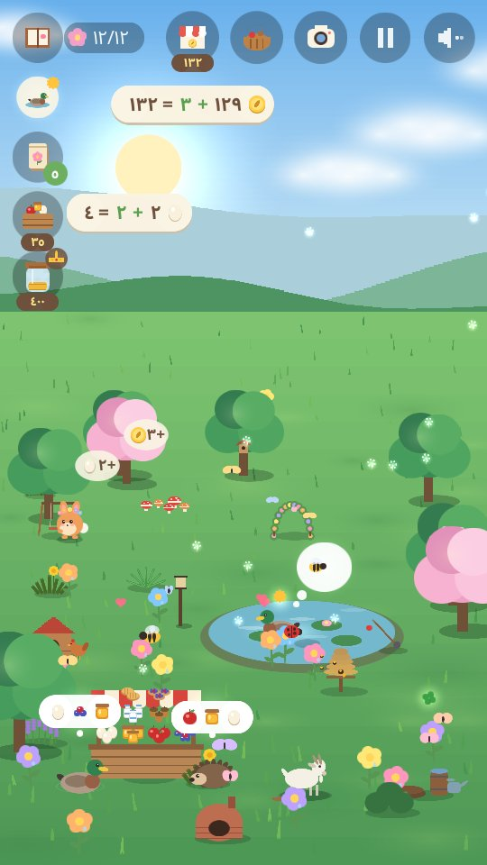
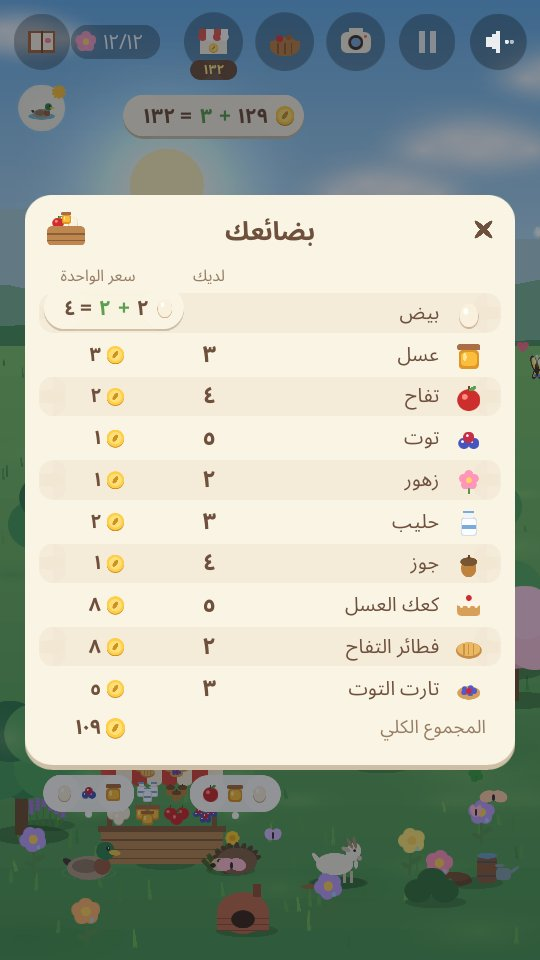
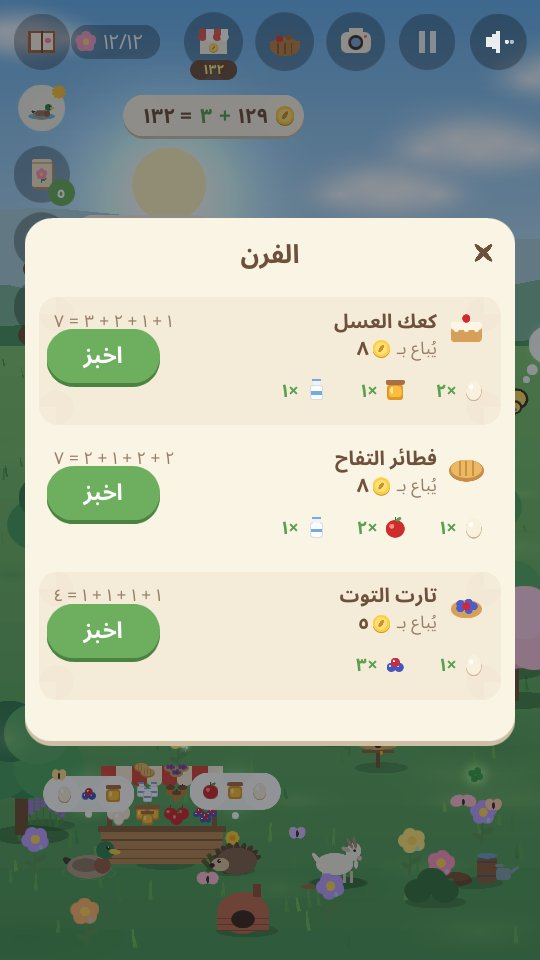
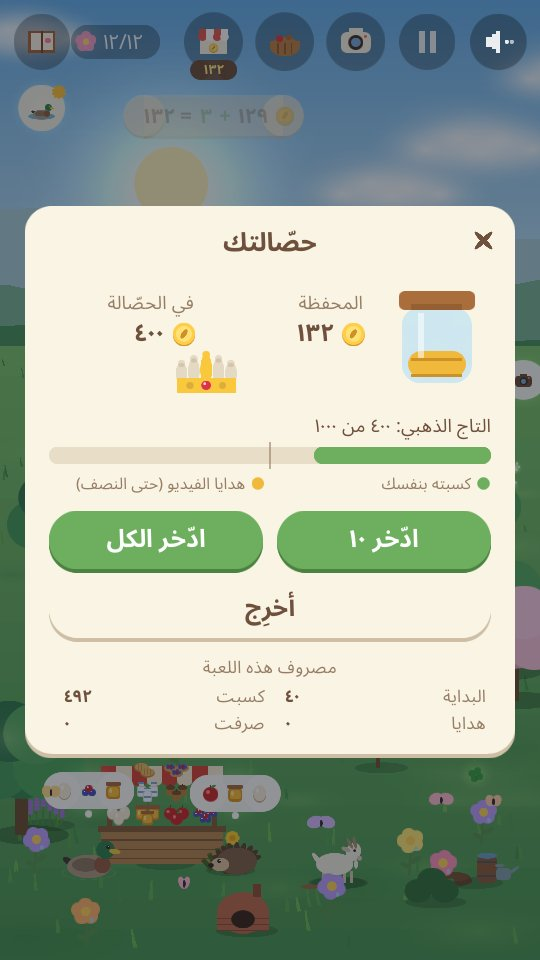

Arnoob Land
لعبة طبيعة هادئة للأطفال

حديقة هادئة تحتاج إلى مساعدتك. أرنب صغير يريد أن يجعلها بيتًا من جديد، بذرةً بعد بذرة. ازرع الزهور، وابنِ بركة، وضع الطعام، وانظر من يأتي للزيارة. كل فصل يجلب أصدقاء جددًا من الحيوانات: النحل والبط في الربيع، والسلاحف والطيور الطنانة في الصيف، والثعالب والغُرير في الخريف، وبوم الثلج والقُضاعة في الشتاء.
- هادئة ولطيفة: لا مؤقتات، ولا نقاط تخسرها، ولا شيء تفشل فيه.
- أصوات الطبيعة فقط: الرياح والماء والمطر والطيور وأصوات الحيوانات. بلا موسيقى.
- أربعة فصول و٨٠ حيوانًا تصادقها، مع حيوانات ذهبية ولحظات نادرة تكتشفها.
- راقب القمر: ليلةً بعد ليلة يتغيّر من هلال صغير إلى بدر ثم يعود، والبوم يحب ليالي البدر.
- التقط الصور لأصدقائك من الحيوانات في ألبومك: كل صورة تكسبك عملة.
- تعلّم كيف ترعى أصدقاءك: لاحظ ما يحتاجه كل حيوان وابنِ له بيته (بركة، كومة جذوع، شجيرة توت...) فيأتي الأصدقاء الجدد أسرع، وحقّق أمنياتهم، وساعد صديقين على اللعب معًا، وأهدِ صديقًا زهرة، وشاهد الصداقات تكبر.
- أدِر مزرعة صغيرة: أطعم الدجاج، واعتنِ بالنحل والعنزة، واقطف التفاح والتوت والزهور، وبِعها في كشكك المزدحم للأصدقاء الذين يأتون للشراء. ما اشتريته يُباع بنصف ثمنه، إلا البركة والنباتات والبذور والأشجار.
- كن مساعد الحديقة: اقتلع الأعشاب، واجمع الأوراق، وأزل الثلج لكومة السماد، فتعطيك محصولًا إضافيًا ومزرعة أسرع، واسقِ الزهور وأشجار الفاكهة. كل عمل ترفع به مستواك كمساعد للحديقة.
- اخبز وجهّز الطلبيات: حوّل البيض والحليب والعسل والتفاح والتوت إلى كعك وفطائر وتارت ومربى تُباع بسعر أعلى، واجمع الحساب عندما يحضر صديق طلبية صغيرة.
- احسب وأنت تلعب: كل بيضة تجمعها أو تبيعها، وكل عملة تكسبها أو تصرفها، تظهر كحساب بسيط مثل ٣ + ٢ = ٥.
- تعلّم الادّخار: ضع العملات في حصّالتك، وشاهدها تكبر قليلًا كل يوم، وادّخر لتشتري التاج الذهبي.
- ابنِ التاج الذهبي قطعةً قطعة: الادّخار يملؤه بالذهب، والأصدقاء يحضرون جواهره الثلاث.
- لعبة هادئة في كل فصل: صيد السمك (ثم يعود حرًّا)، وجمع اليراعات (ثم تطير حرّة)، وحصاد الجوز والتفاح في الخريف، وبناء قلعة من الثلج.
- الغمّيضة مع الأصدقاء: من صديقك الخامس يختبئ الأصدقاء في أنحاء الحديقة ويلعبون معًا، وعندما تجدهم كلهم يزورك الأصدقاء الذهبيون أكثر.
- ثماني لغات: الإنجليزية، والعربية، والصينية (المبسطة)، والفرنسية، والألمانية، واليابانية، والروسية، والإسبانية. تبدأ اللعبة بلغة هاتفك (وبالإنجليزية لأي لغة أخرى)، والكرة الأرضية في شاشة البداية تغيّرها. كُتبت اللعبة بالإنجليزية، وتُرجمت إلى اللغات السبع الأخرى بمساعدة الذكاء الاصطناعي.
- رحلة طويلة وهادئة: العب السنة كلها على مدى أيام كثيرة، أو لعبة أقصر في فصل واحد. تُحفظ حديقتك وأنت تلعب.
- حديقة أحلام، إن شئت: ادّخر لأرجوحة، وجسر صغير، ونافورة، وبيت فوق الشجرة، وغيرها. يستعملها أصدقاؤك، وقد يأتي أربعة أصدقاء سريّون لرؤيتها.
في الحديقة




لأولياء الأمور
لا حسابات، ولا محادثة، ولا مشتريات. تُعرض الفيديوهات فقط عندما يختار اللاعب مشاهدة واحد منها، مقابل هدية صغيرة في اللعبة: سلة بضائع للبيع، أو بعض العملات، أو مفاجأة للحديقة، أو بذور، أو طعام للحيوانات.
سياسة الخصوصية app-ads.txt